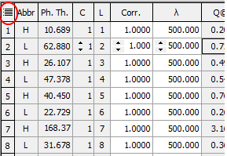
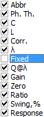
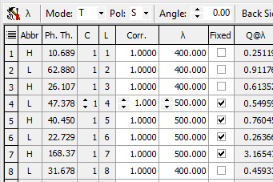

Fixing Wavelength of Some Layers
Fixing Wavelength of Some Layers
Navigation: OptiLayer Menu Commands > Results Menu > OptiLayer Monitor >
Fixing Wavelength of Some Layers
` <automatic_monitoring_strategie.html>`__ ` <idh_monitor.html>`__ ` <wavelength_adjustment.html>`__
It is possible to exclude some layers from Automatic Strategy Generator procedures. For this purpose, make visible the column of the Monitoring Spreadsheet.

And in the pull-down menu, select “Fixed column”.

When the Fixed column is visible, it is possible to activate the Fixed state for some layers.
